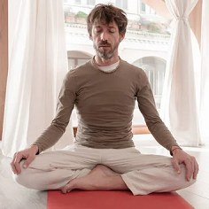

Catalina
El objetivo de mi trabajo es ofrecer las herramientas de conciencia oportunas para el reencuentro con la libertad y el propio poder de cada persona

Miguel
En la actualidad estoy enfocando la práctica postural y la enseñanza de yoga mediante vinsayas y secuencias de posturas para despertar la sensibilidad del cuerpo, aquietar la mente y relajar el cuerpo.
Florencia
Combino las enseñanzas tradicionales del yoga de India y Tíbet con una interpretación contemporánea. Para que el individuo pueda integrar la enseñanza y lograr un despertar de su propia consciencia